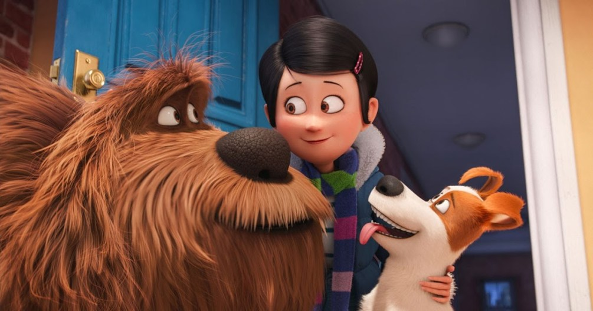

A pesar de los esfuerzos por el bienestar animal, Costa Rica todavía tiene un pendiente: atender a los miles de zaguates sin hogar o en condición de abandono. Datos de Senasa desde el 2012 apuntan que en el país hay más de 1 millón de perros callejeros. De acuerdo con datos de la Organización Mundial de la Salud (OMS), el 70% de los perros en el mundo no tienen un hogar.

Aunque en general la sociedad avanza hacia una mayor concienciación sobre la responsabilidad que tenemos hacia los animales de compañía y el compromiso que requiere convivir con ellos, sigue habiendo lamentablemente muchos casos de abandono.
No obstante, las cifras son preocupantes y nos indican que todavía hay muchas personas que no tienen un vínculo sano con su animal, que implica una responsabilidad y un compromiso sólidos. Si no hay una reflexión previa seria, y no existe este vínculo sano, los problemas que surgen de la convivencia pueden derivar en abandono.
Si estás valorando la posibilidad de adoptar un animal de compañía y estás planteándote compartir tu vida con un perro, debes tener en cuenta los siguientes aspectos clave:
- Reflexionar: Antes de adoptar un animal de compañía hay que tener claro el compromiso que eso conlleva. Se trata de una opción para toda la vida del animal y hay que implicar en la toma de decisión a toda la familia.
- Informarse: Pedir consejo y asesoría a las protectoras para estar preparados, saber qué tipo de animal nos conviene más según nuestros hábitos y conocer todas aquellas responsabilidades que tendremos que estar dispuestos a cumplir.
- Esterilizar: Al esterilizar a nuestro perro podremos evitar camadas no deseadas, que sigue siendo la principal causa de abandono alrededor del mundo.
- Identificar: Si identificamos a nuestro animal de compañia correctamente podemos facilitar que nos sea devuelto en caso de pérdida.
- Educar: Educando al animal, mejora su comportamiento. De esta manera, la convivencia será más fácil y disfrutaremos mucho más de la compañía de nuestro perro.